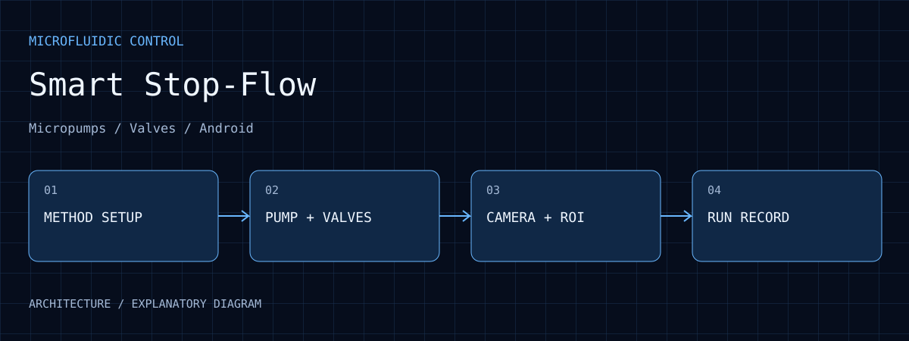

Integration direction
The developing prototype connects method setup, fluid control, imaging and records.
Smart Stop-Flow
An in-development microfluidic prototype connecting ESP32-S3 pump/valve control, Android methods, phone imaging, ROI analysis, and experiment records.

01 / PURPOSE
Align sample delivery, stop-flow observation, and stored records on one experimental timeline.
02 / ARCHITECTURE
Android defines experiment steps and stores the parameters used for an operation.
An ESP32-S3 state machine sequences pumps and microvalves through pre-pressure, loading, cleaning and abnormal stop.
Lighting, video, ROI and frame analysis connect images to controller events.
Room stores method snapshots, events and media indices so a run can be reviewed in context.
03 / WORKFLOW
Configure steps and timing, then retain a snapshot for the run.
Operate pumps and valves while recording controller state.
Record video and analyze a selected ROI in relation to control stages.
Bring events, media references and the method snapshot together.
04 / EVIDENCE
The developing prototype connects method setup, fluid control, imaging and records.
KiCad, SolidWorks and COMSOL work supports device and microfluidic interfaces.
Flow, mixing ratio and stop time require calibration for the actual chip, tubing and fluid.
Architecture, workflow and inspectable records explain the outcomes. No photograph or screenshot meeting the presentation criteria has been selected for this page.
05 / ANALYSIS
An image may belong to loading, waiting or cleaning. Event timing connects ROI output to the experimental stage.
A method name alone cannot reconstruct an earlier run. Preserving its actual steps helps explain differences across executions.
Dead volume, compliance and back pressure can affect fluid behavior after a pump command. Assess stopping with observation and calibration.
06 / REPRODUCE
07 / LIMITS
Private and in development. Flow, ratios, and physical stopping times require wet calibration. Awards for the biomimetic platform are not attributed to this project.
08 / SOURCES
Selected images retain their visual content. Captions distinguish prototype photographs, application interfaces, archived records, analysis and simulations.